Exceptional real estate?
A discussion of investment performance
in the long run
Dr Thies Lindenthal
Department of Land Economy
University of Cambridge
tw:
@ThiesLindenthal
## <span class="subtitle"><br></span> <p class="centred"> <strong>“Buy land<span class="fragment highlight-red strike">, they don’t make it anymore.</span>”</strong> <br> <span class="fragment highlight-red strike">Mark Twain</span> </p>
## Scarcity? What Scarcity?<span class="subtitle"><br/>CRE, City of London: Capital gains & total returns</span> 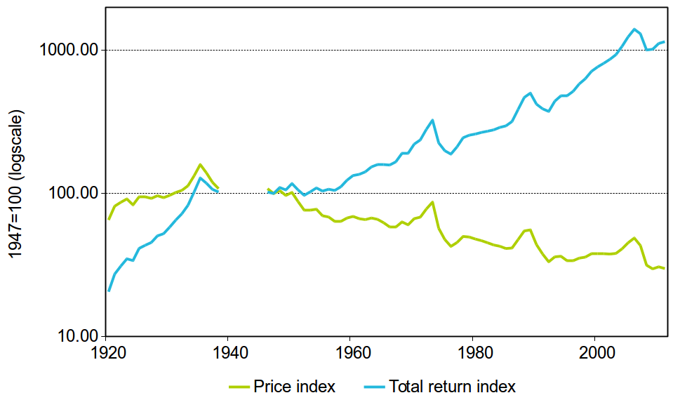 <p class="source">Source: Scott (1996); MSCI/IPD</p>
## Residential RE?<span class="subtitle"><br/>No gains, high volatility (<a href="https://www.degruyter.com/princetonup/view/title/516675">Shiller, 2005</a>)</span> * US home prices (real), 1890–2014 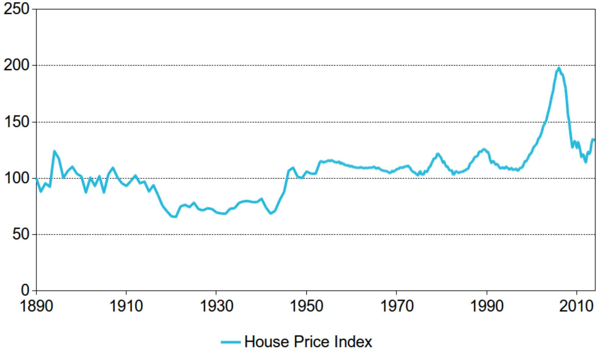
## Manhattan?<span class="subtitle"><br/>Capital gains? (<a href="https://onlinelibrary.wiley.com/doi/abs/10.1111/j.1540-6229.2009.00235.x">Wheaton, Baranski & Templeton, 2009</a>)</span> * 100 years of CRE (real) 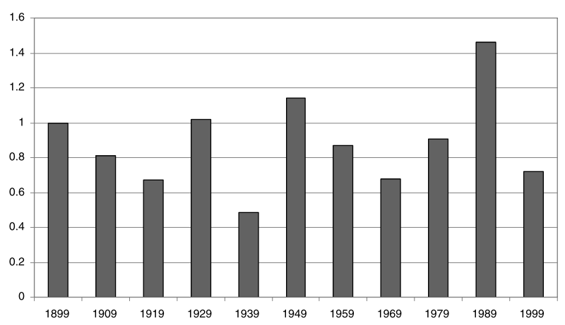
## Norway?<span class="subtitle"><br/>Nothing to see before the 1990's (<a href="https://www.norges-bank.no/en/news-events/news-publications/Papers/Occasional-Papers/35-Historical-Monetary-Statistics-for-Norway-18192003/">Eitrheim & Erlandsen, 2003</a>)</span> * House prices (real), 1819–2003 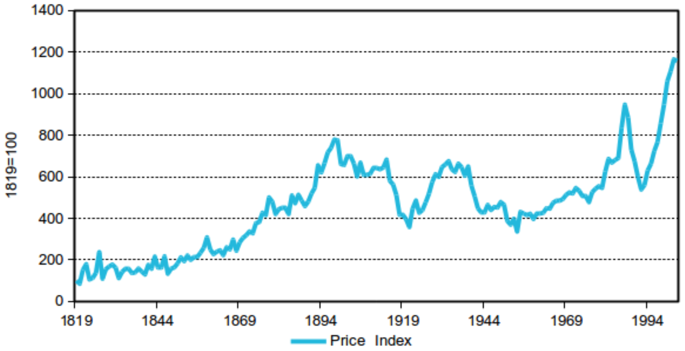
## Beijing?<span class="subtitle"><br/>No price gains (<a href="https://www.sciencedirect.com/science/article/abs/pii/S0014498313000132">Raff, Wachter & Yan, 2013</a>)</span> * House prices, Beijing. 1644–1840 - "real" returns based on rice prices 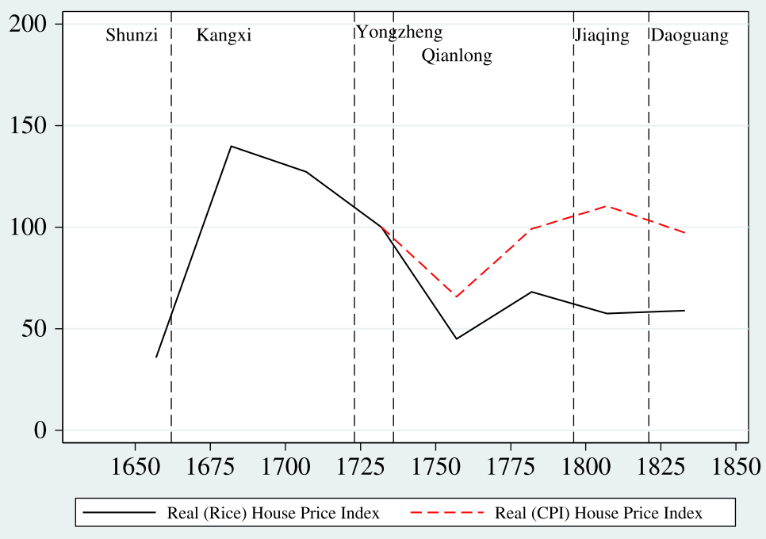
## Amsterdam?<span class="subtitle"><br/>No long-term growth of prices! (<a href="https://onlinelibrary.wiley.com/doi/abs/10.1111/1540-6229.00711">Eichholtz, 1997</a>)</span> * Herengracht, Amsterdam, 1650–2005 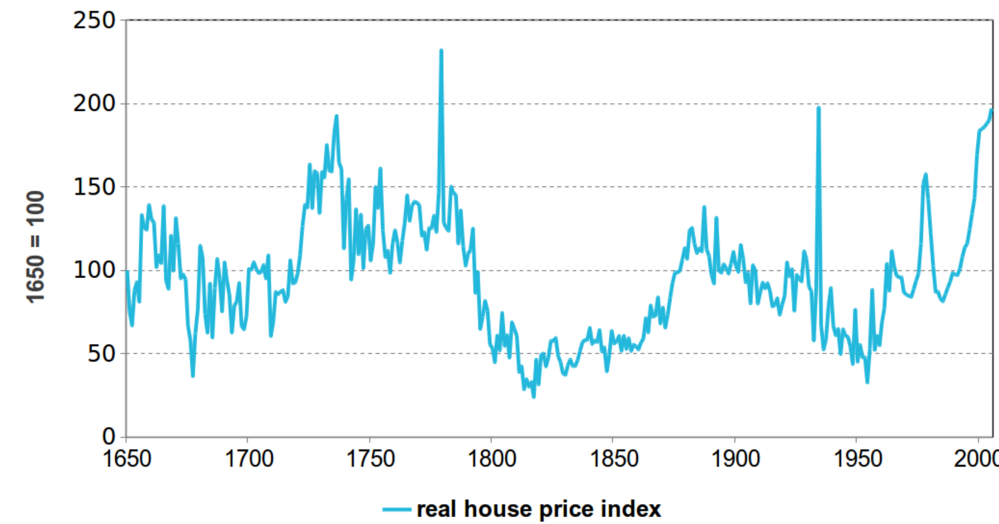
<p class="source centred">Gerrit Adriaenszoon Berckheyde: Herengracht, Amsterdam, 1672</a>
## Not a good investment?<span class="subtitle"><br/>Not that fast...</span> * Gross Yield ~6%, average for 355 years (<a href="https://www.jstor.org/stable/23463530">Ambrose, Eichholtz, Lindenthal, 2013</a>) 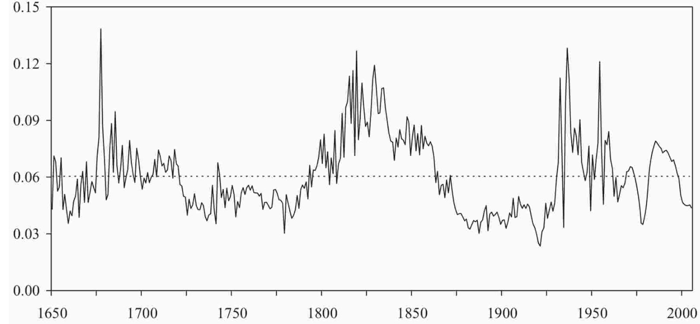
## A Risk premium puzzle?<span class="subtitle"><br>The Rate of Return on Everything, 1870–2015 (<a href="https://academic.oup.com/qje/article/134/3/1225/5435538">Jordà et al., 2019</a>)</span> <br>“Arguably the most surprising result of our study is that long-run returns on housing and equity look remarkably similar. <mark>Yet while returns are comparable, residential real estate is less volatile on a national level, opening up new and interesting risk premium puzzles.</mark>”
## Better data!<span class="subtitle"><br/>Asset-level Total Returns (<a href="https://academic.oup.com/rfs/advance-article/doi/10.1093/rfs/hhab042/6222230">Eichholtz, Korevaar, Lindenthal, Tallec</a>)</span> * Rents, costs, taxes, prices for residential RE in Paris (1809–1943) and Amsterdam (1900–1979) * 170,000 observations collected from archives 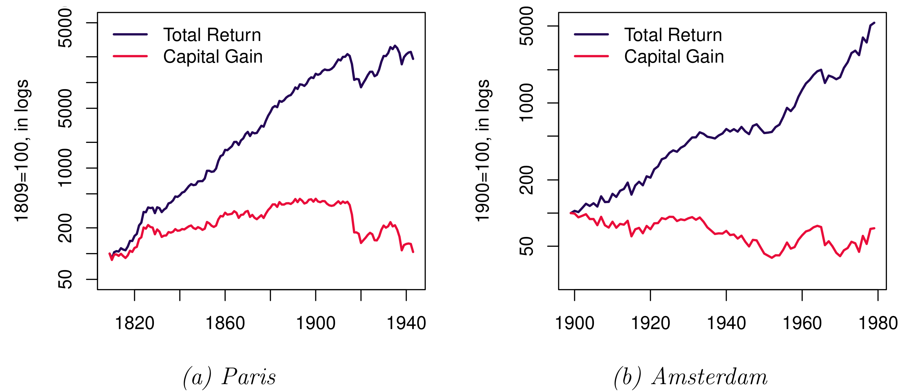
## "Normal" Sharpe Ratios<span class="subtitle"><br/>Asset-level total returns (<a href="https://papers.ssrn.com/sol3/papers.cfm?abstract_id=3549278">Eichholtz, Korevaar, Lindenthal, Tallec</a>)</span> * Paris (1809–1943) und Amsterdam (1900–1979) <img src="imgs/returntable.png" height=400>
## Risk <span class="subtitle"><br>Systematic and specific risk: Diversification?</span> * Risk at single asset level — realistic for most investors 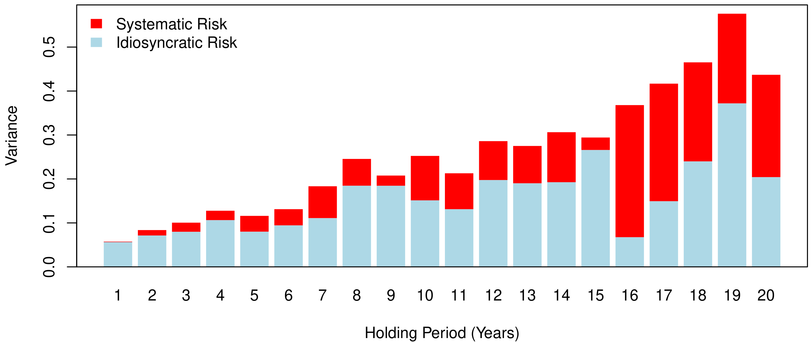
## But rent is always up?!<span class="subtitle"><br/>Mild growth in real terms <1% per year.</span> <div class="centred"> <span class="caption centred">Amsterdam, Paris, London, Brüssel, Brügge, Ghent, Antwerpen</span><br> 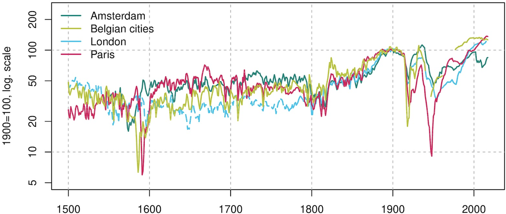 <p class="source">Source: <a href="https://papers.ssrn.com/sol3/papers.cfm?abstract_id=3418495">Eichholtz, Korevaar, Lindenthal (working paper)</a></p> </div>
## But rents are rising?<span class="subtitle"><br/>Half a millenium of rents: 1500–2019</span> <div class="centred"> <span class="caption centred">Amsterdam, Paris, London, Brussels, Bruges, Ghent, Antwerp</span><br> 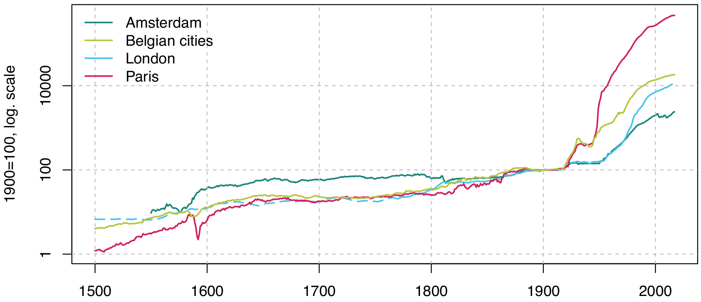 <p class="source">Source: <a href="https://papers.ssrn.com/sol3/papers.cfm?abstract_id=3418495">Eichholtz, Korevaar, Lindenthal (working paper)</a></p> </div>
<h3 class="centred"><span class="darkonlight">Feedback, Comments, Questions?</span></h3> <p class="centred"><a class="darkonlight" href="mailto:htl24@cam.ac.uk">htl24@cam.ac.uk</a></p> <p class="centred"><span class="darkonlight">Twitter: <a href="https://twitter.com/ThiesLindenthal">@ThiesLindenthal</a></span></p> <br> <br> <br>